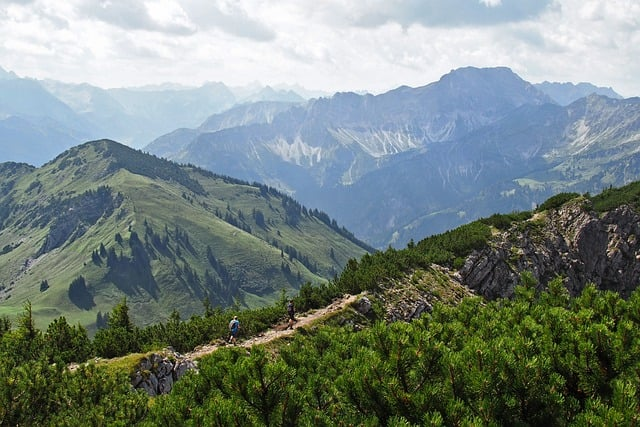

Being out in nature away from all forms of technology is something that everybody should do at least once in a while. Hiking allows you to step away from the normal distractions of everyday life and enjoy some peace while away.
Moving around and exercising for just 30 minutes each day can help with fatigue, sleep issues, creativity, and happiness levels. It may seem surprising to hear this, but being outside in nature can help both mentally and physically.
There aren’t too many things that are required to begin hiking. If you have a decent pair of shoes and a bottle of water, the only other thing you need to do is find a location to go. Most areas have a few places that could be perfect for hiking and exercise.
It’s often stated that exercise and moving your body can help reduce stress levels and increase your overall happiness. Hiking works the same and in some cases works even better! Being outdoors and enjoying nature while also getting exercise will do wonders in making you appreciate life and boost happiness.
Hiking can be an intense full-body workout in that almost every muscle will be used. You may be sore after a full day of hiking, but just know that the feeling is a good thing that is working to help keep your body and heart strong and healthy.
If you’re skeptical about this fact, I advise you to spend a little bit of time exploring nature each day. For some people it may not be true, but after a week of getting outside each day I feel more alive and grounded in my connection to nature and to the world!
Ready to get started? Grab some water bottles, head out the door, and start hiking today!